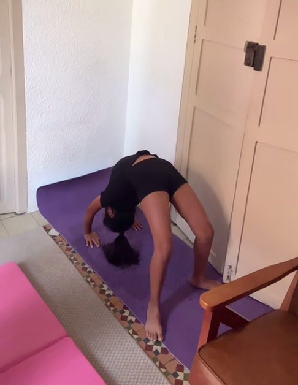
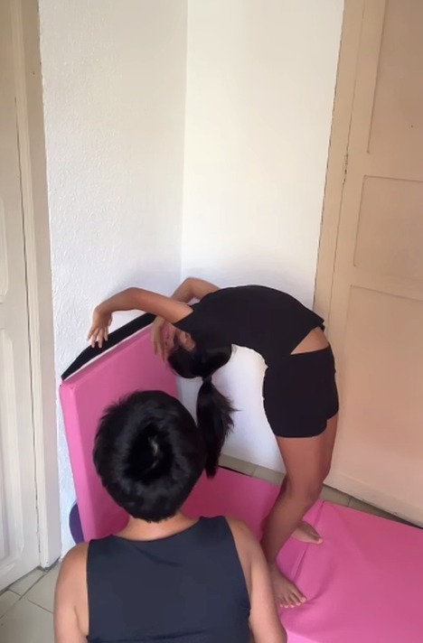

Clases 5 y 6 — Venciendo el miedo a caer y a patear
📅
ClasesNº 5 y 6
📍
UbicaciónEspaña · Virtual
💻
ModalidadVirtual
✅
EstadoCompletadas
Clases 5 y 6 en vivo
Resumen de las clases
Estas dos clases tuvieron un mismo hilo conductor: perder el miedo. En la clase 5, el miedo a caer de espaldas hacia el puente; en la clase 6, el miedo a patear hacia la parada de manos. En ambos casos, Annika avanzó con el apoyo de su mamá y de progresiones bajando poco a poco la exigencia.
🌉
Clase 5 — Caída en arco de pie
Trabajo de caída hacia atrás desde la posición de pie hacia el puente, bajando la altura de apoyo poco a poco (primero sobre un bloque elevado, luego más cerca del piso) con la ayuda directa de su mamá para perder el miedo a caer de espaldas.


🤸
Clase 6 — Camino a los brazos estirados
Se retomó la parada de codos ya dominada y se empezó a trabajar, poco a poco, estirar más los brazos contra la pared. El objetivo de esta clase fue que Annika entienda que el pateo que ya domina en la parada de codos es exactamente el mismo que necesita para la parada de manos — y que solo falta perder el miedo a hacerlo, no aprender una técnica nueva.
Hito de la clase 5
Venció el miedo a caer
Con ayuda directa de su mamá, Annika se dejó caer hacia atrás desde la posición de pie hasta el puente, bajando la altura del apoyo poco a poco. Es un movimiento que exige confiar en el propio cuerpo y en quien te sostiene — y Annika lo logró.
No es un logro de fuerza ni de técnica — es un logro de confianza. Annika se dejó caer sabiendo que su mamá estaba ahí, y con cada repetición esa confianza se vuelve más suya.
Evaluación de las clases 5 y 6
Diagnóstico observado
El trabajo técnico de Annika sigue muy sólido; lo que estas dos clases pusieron sobre la mesa es el componente emocional del proceso — el miedo — y cómo se va venciendo con progresiones bien dosificadas y acompañamiento cercano.
Logro
Caída en arco vencida
En proceso
Brazos estirados en la pared
Foco emocional
Perder el miedo al pateo
✅
Caída en arco: de necesitar altura de apoyo, a bajar cada vez más cerca del piso
La progresión de bajar la altura del bloque de apoyo, combinada con la mano firme de su mamá, le permitió a Annika perder el miedo a caer de espaldas sin necesitar más que su propio cuerpo como referencia.
🔍
Brazos estirados: la fuerza ya está, falta la confianza
Annika ya domina la parada de codos, que exige una base de fuerza similar a la de brazos estirados. El reto ahora no es de fuerza ni de técnica, sino de perder el miedo a patear más alto y sostener el peso en brazos completamente extendidos.
🎯
Mismo pateo, dos posiciones
El mensaje clave de la clase 6 fue que el pateo hacia la parada de codos y hacia la parada de manos es el mismo movimiento. Una vez que Annika lo interiorice, la transición a brazos estirados será más de confianza que de técnica nueva.
Estas dos clases mostraron que el mayor obstáculo de Annika en este punto no es físico, es emocional. Y como toda base de confianza, se construye con progresiones pequeñas, repetición y el acompañamiento de su mamá en cada intento.
Plan de trabajo
Prioridades técnicas
Con base en lo observado en estas dos clases, las siguientes son las prioridades técnicas que guiarán las próximas sesiones:
1
Perder el miedo al pateo hacia la parada de manos
Repetir el pateo contra la pared entendiendo que es el mismo movimiento que ya domina en la parada de codos, para que deje de sentirse como una habilidad nueva y desconocida.
2
Consolidar la caída en arco sin apoyo elevado
Seguir bajando gradualmente la altura de apoyo hasta lograr la caída en arco directo desde el piso, siempre con la mano firme de su mamá cerca.
3
Brazos estirados contra la pared
Aumentar progresivamente la extensión de los brazos desde la parada de codos ya dominada, hasta sostener el peso corporal con los brazos completamente estirados.
4
Reforzar la confianza con repetición
Ambos hitos de estas clases fueron de confianza más que de fuerza — seguir repitiendo en un entorno seguro y acompañado para que cada logro se vuelva automático.